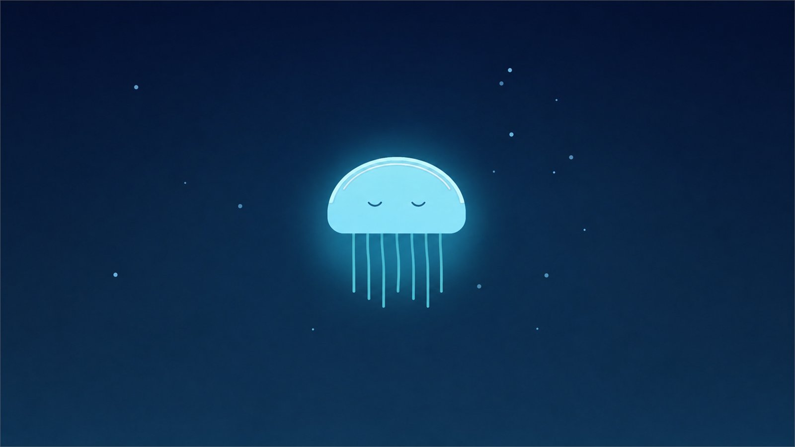

R-01Academic research · ongoing
Neural Entrainment
Child-Friendly EEG Adaptation
- Lab
- Language Acquisition and Brain Laboratory (QLAB), Northeastern University
- Period
- 07/2026 – Present
- With
- Prof. Zhenghan Qi
Research question
How can child-friendly visual cycles, artificial-language speech, and EEG event markers remain synchronized during audiovisual learning experiments?
Contribution
PsychoPy language-learning experiments for children: speech and visual cycles synchronized, EEG event markers via Lab Streaming Layer; timing, breaks and pauses validated; EEG session support.
